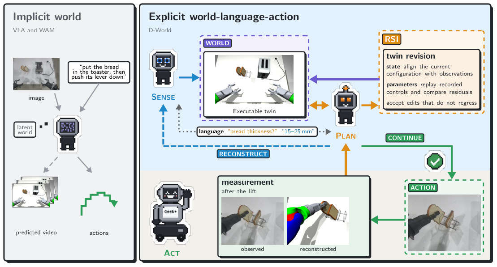
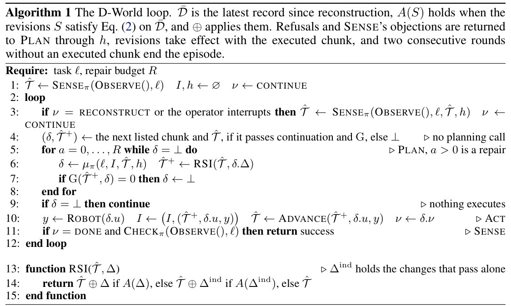
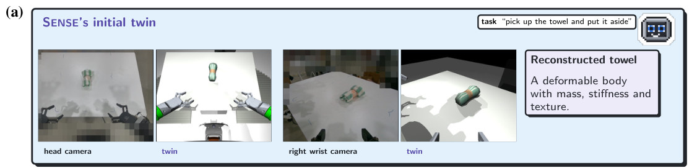
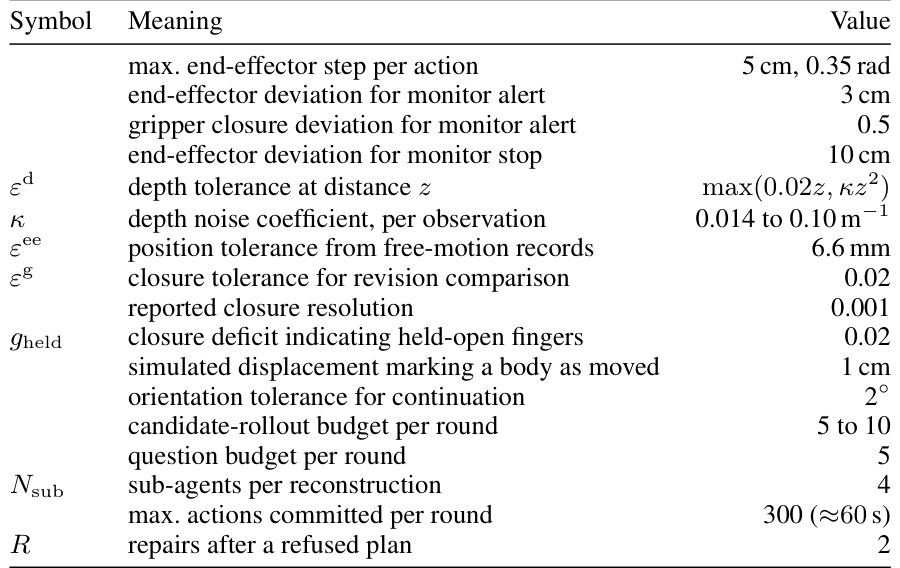
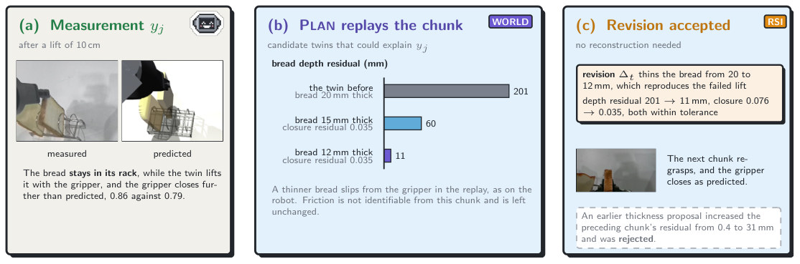
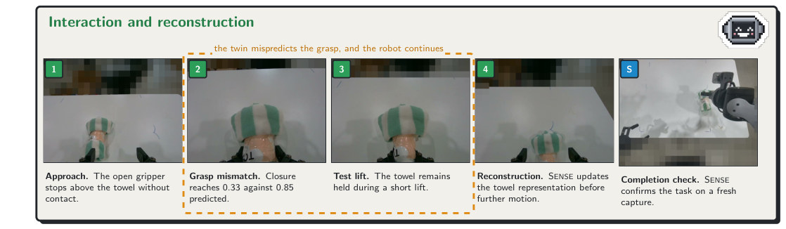
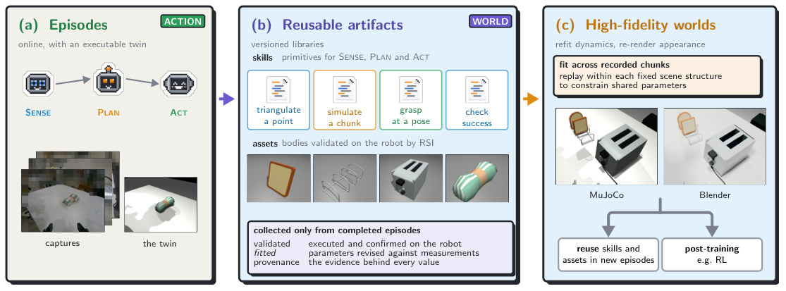
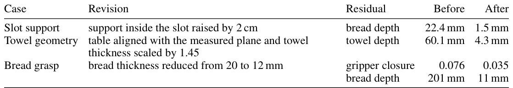
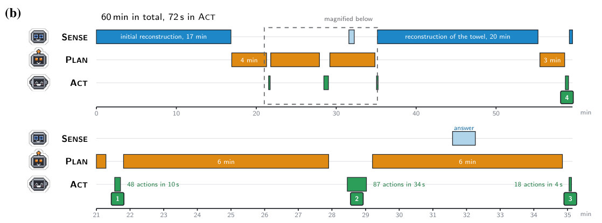

Agent-centric-real-to-sim · 归档于 2026-11-16
D-World
D-World: An Explicit World-Language-Action Model with Recursive Self-Improvement under Dual Control
归档到 Agent-centric real-to-sim：LLM agent 从机器人相机写出可执行 digital twin，并在 episode 内用真机测量逐 chunk 修订它（real-to-sim-to-real）；它的 harness 部分也和 Robotic harness 相关。
TL;DR
- Problem
- 机器人 agent 的世界要么藏在网络里，错了说不出错在哪个量；要么一次写成就和现场不符（面包按 20 mm 建，真机根本没抬起来）。整体重建一次又要约 20 min，贵到 planner 宁可不去试探。
- Idea
- SENSE 把场景写成可执行 twin，PLAN 在 twin 里搜索、每个 chunk 先 gate 再执行；执行后按真机测量改 twin 的具名字段，replay 最近一个 chunk 时没有任何 residual 超出容差地变差才接受（RSI）。结构不对才回 SENSE 重建。dual control 论证：修订越便宜，越值得先试探。
- Result
- 双臂真机上 towel、toaster 两个任务的几个 case：局部修订把面包的渲染深度 residual 从 22.4 降到 1.5 mm、从 201 降到 11 mm，下一个 chunk 不重建就继续执行（Table 1）。没有报告成功率和 trial 数，也没有 baseline。
Problem
世界模型要么改不了，要么写一次就和真机对不上
Running example · 后面每个 stage 都跟着它走
烤面包机任务（Fig. 1、Fig. 2）：双臂机器人，1 个头部 RGB 相机 + 2 个腕部 RGB-D 相机；指令 "put the bread in the toaster, then push its lever down"；平台给机器人模型、控制器、相机内外参和 metric depth，没有物体模型、没有任务训练、没有预演 → 想要：从架子上抓起面包片、放进烤面包机的槽、按下拉杆。
主角是这片面包：twin 里它厚 20 mm（SENSE 给的范围 15–25 mm），真机上抓起来它却留在架上。结构对不上、必须重建的情形，这个 episode 里没有报告，用同一台机器人的第二个任务 towel（"pick up the towel and put it aside"）接着讲。
flowchart LR IN["例子输入
3 个相机 + 指令
bread → toaster"] IN --> A1["隐式 world model
VLA · WAM · WLA"] A1 --> AX["预测和现场不符
找不到是哪个量
只能补数据重训"]:::gap IN --> B1["LLM 直接写动作
CaP-X · 逐轮 agent"] B1 --> BX["抓取后果没人预测
执行后才发现
论文无数字"]:::gap IN --> C1["一次写成的 twin
coding agent 建场景"] C1 --> CX["twin 抬起了面包
真机面包留在架上
depth 差 201 mm"]:::gap IN --> D1["一错就整体重建
经典 SPA 的补救"] D1 --> DX["一次重建约 20 min
试探太贵就不试探
turn-off"]:::gap
前两条"坏在哪"是按 §1 的论述推断的，论文没跑这两类 baseline，也没有数字。第三条是 D-World 自己修订前的 twin（Fig. 2 "the twin before"），不是另跑的 baseline。第四条的 20 min 来自 towel episode（Fig. 3b）；reconstruction-only 作为 baseline 论文还没跑（§7），turn-off 是 §4.5 的论证。
根本问题：世界模型要么不可编辑，要么写成后不再对照真机测量去改；唯一的修法（整体重建）又贵到 planner 不敢试探。 这篇的切入点：把世界写成带具名字段的可执行 twin，每个 chunk 后按测量改字段，replay 不变差才收；改得便宜，试探才划算。
Related work
| 相关工作 | 解决什么 | 怎么解决 | 和本文的区别 |
|---|---|---|---|
| 同一问题 · 别的解法 | |||
| 隐式 world model π0.5、GR00T N1、WAM、WLA | 让 policy 预测动作的后果 | 一个网络同时出未来（画面或 latent）和动作 | 预测错了追不到是哪个量，要新数据重训 → 世界写成程序，误差指向具名字段，测完就改 |
| LLM 机器人 agent 与 harness Code as Policies、CaP-X、GPT-6 Astra 逐轮控制、RegenHarness | 让 frontier LLM 直接给机器人编程或逐轮控制 | 写调用感知、控制原语的程序；harness 查运动学、碰撞或图像，RegenHarness 按证据改自身配置 | 动作后果执行后才看见，被改进的是 harness → 每个 chunk 先在物理 twin 里 gate，被改进的是 world model |
| Real-to-sim-to-real RialTo、SIMPACT、Real-is-Sim；SimEX、Agentic Real2Sim、Agentic RSR | 用重建的仿真场景规划、同步或训练 policy | 重建后做 rollout 或训练；LLM 系统靠真机 trial 之间、离线 replay 或工作区观测反馈 | 反馈在 trial 之间或离线 → 在 episode 内每个 chunk 后按测量修订 twin，replay 把关后再 gate 下一个 chunk |
| 相似做法 · 别的问题 | |||
| Code world model WorldCoder、Code as Worlds、Code World Model、VisualPatchWorld · 本文属于这一类做法 | 用可执行程序表示世界或动力学 | coding agent 写场景或动力学程序，用于交互环境、物理推理或规划 | 一次写成仍和场景不符（Video2World、BVB），也不和真机测量闭环 → 真机测量驱动 RSI 逐 chunk 修订 |
| 物理辨识 / residual world model EMPIRIC、LLMPhy、ASID | 从交互中辨识物理参数或补全动力学 | LLM 引导经物理引擎拟合；EMPIRIC 给引擎加 residual code，按信息量选实验 | EMPIRIC 改引擎、补缺失物理 → 只改受支持的参数字段，结构变化交给重建；何时试探由 dual control 论证 |
来源：论文 §2 Related Work，以及 §1、§4.5、§7 里的对比；未另行检索。论文没有和其中任何一个做数值对比。RialTo、SimEX、Agentic Real2Sim、Agentic RSR 在 library 里有页面，EMPIRIC、Video2World 是同一轮的论文。
Level 1 · Big picture
SENSE 写 twin，PLAN 在 twin 里搜索并逐 chunk gate，真机测量驱动 RSI 修 twin

怎么读这张图
- 左栏 "Implicit world"（VLA and WAM）：图像 + 指令 "put the bread in the toaster…" 进一个网络，世界是 "latent world"，输出 "predicted video" 和 "actions"。预测错了，没有可改的字段。
- 右上 SENSE → WORLD（紫框）：SENSE 把相机看到的写成 "Executable twin"：架上的面包、烤面包机、两只张开的夹爪。
- 虚线 language 通道：PLAN 问 "bread thickness?"，SENSE 答 "15–25 mm"，就是例子里面包厚度的范围。
- PLAN ↔ WORLD（橙色双箭头）：PLAN 在 twin 里仿真候选轨迹。
- RSI 框 "twin revision"：state = 把当前构型对齐观测；parameters = replay 录下的控制、比较 residual；底行 "accept edits that do not regress"，就是接受规则。
- CONTINUE + 绿色对勾 → ACTION：对勾就是 gate；过了才在真机执行（图里机器人夹着抬起的面包片）。
- ACT → measurement "after the lift"：observed（真机图）对 reconstructed（twin 渲染），结果回到 PLAN。
- 蓝色虚线 RECONSTRUCT：结构对不上时 PLAN 让 SENSE 重建。
flowchart TD I["Input
相机图像 + 指令
bread → toaster"] --> S["SENSE 写 twin
bread 厚 20 mm"] S --> P["PLAN
在 twin 里搜、提修订
抓起、上抬 10 cm"] P --> A["Gate → ACT → 测量
closure 0.86 vs 0.79"] A --> R["RSI
replay 不变差才改
厚度 20 → 12 mm"]:::win R --> P P -.->|RECONSTRUCT| S P -->|DONE| O["Output
SENSE 确认完成
+ 录下的 twin"]
Level 2 · Stages
6 个 stage：一个感知 agent、一个规划 agent，中间是 harness

| Algorithm 1 的符号 | 是什么 | 在面包例子里 |
|---|---|---|
| ℓ | 任务，一句话 | "put the bread in the toaster, then push its lever down" |
| T̂ | twin：可执行的场景程序，由结构、参数、状态三块组成（下三行） | 面包、架子、烤面包机和桌面的仿真模型 |
| M | 结构：有哪些物体、什么几何类型、怎么连接；只有重建能改 | 面包片、架子、烤面包机（含槽内支撑）、桌面 |
| θ̂ | 参数：尺寸、质量、摩擦、接触参数、固定物体的位姿 | 面包厚 20 mm；槽内支撑的高度 |
| x̂ | 状态：可动物体的位姿和速度、关节状态 | 面包片现在的位姿 |
| δ | PLAN 一次规划调用的决定：整条轨迹、要执行的一段、修订、预期、下一步 | "抓起面包、上抬 10 cm"那一轮的全部输出 |
| δ.u | chunk：轨迹里交给真机执行的前一段 | 抓起、上抬 10 cm |
| y | 执行后测到的：每个动作后的本体感知、要求的拍照、结束时的观测 | 夹爪合到 0.86（twin 预测 0.79）；面包还在架上 |
| Δ | revision：一组具名字段的赋值，每条带新值、理由和测量证据 | bread thickness：20 → 12 mm |
| ν | 下一步：继续（CONTINUE）、重建（RECONSTRUCT）或完成（DONE） | 修订后继续，下一个 chunk 重新抓 |
| G | gate：chunk 在 twin 里仿真时守住机器人极限、预期也成立，就是 1，否则 0 | 重新抓的 chunk 在 12 mm 的 twin 里过了 gate |
| R | gate 拒绝后最多再规划几次（修复） | 2（Table 2） |
| D̄ | 最近一条记录：重建以来最后执行的 chunk（起始状态、控制、测量）；还没执行过就用重建时的观测 | 抬起失败的那个 chunk |
| A(S) | 一组修订在最近记录上通过接受规则（Eq. 2，见 Stage 4） | 20 → 12 mm 通过 |
| Δind | 整个修订不过时，退而保留的"单独能过"的那些改动 | 本例整体通过，用不到 |
| I, h | 历史记录；两个 agent 的笔记、脚本，以及拒绝和反对的理由 | 失败抬起的记录；SENSE 的测量脚本 |
| μπ, π | PLAN 的规划调用；背后那个冻结不训练的 LLM | 论文只说 "a frontier LLM"，没给名字 |
怎么读这张图
- 第 1 行：SENSE 拿一次观测和任务写出初始 twin（T̂）；历史和笔记为空，下一步设为继续。
- 第 3 行：PLAN 要求重建，或操作员用语言打断时，SENSE 带着当前 twin 和笔记重写。
- 第 4 行：PLAN 上一轮列出的后续 chunk，如果连续性检查和 gate 都过，就直接用，省一次规划调用。
- 第 5–8 行：规划调用最多 1 + 2 次（R = 2）：PLAN 出决定（δ）→ RSI 先挑能接受的修订 → 在修订后的 twin（T̂+）里 gate；不过就清空重来。
- 第 9 行：都没过，本轮什么也不执行；连续两轮这样，episode 结束。
- 第 10 行 ACT：真机执行 chunk、测到 y；把（twin、chunk、测量）记入历史；twin 前进到 chunk 结束时的状态。
- 第 11 行：PLAN 说完成，且 SENSE 在一次新观测上确认，才返回 success。
- 第 13–15 行 RSI：整个修订通过接受规则就全用；否则只用单独能过、合起来也过的部分；再不行 twin 不变。被拒的修订不会连带拒掉动作计划。
flowchart TD S1["1 · SENSE 写 twin
bread 20 mm，15–25"] --> S2["2 · PLAN 在 twin 里搜
抓起、上抬 10 cm"] S2 --> S3["3 · Gate → ACT → 测量
面包留在架上"] S3 -->|测量 + residual| S4["4 · RSI：修订 + replay
20 → 12 mm，接受"]:::win S4 -->|修订后的 twin| S2 S2 -->|RECONSTRUCT / DONE| S5["5 · SENSE 重建或确认
towel 重建 20 min"] S5 --> S2 S5 -->|episode 结束| S6["6 · 离线 refit
MuJoCo、Blender"] click S1 href "#stage-1" click S2 href "#stage-2" click S3 href "#stage-3" click S4 href "#stage-4" click S5 href "#stage-5" click S6 href "#stage-6"
点击 stage 展开 Level 3 细节。RSI 实际在下一轮规划调用里、gate 之前执行（Alg. 1 第 6 行）；为了先讲测量再讲修订，这里排成 3 → 4。贯穿各 stage 的"什么时候值得先试探"见 Dual control。
Level 3 · Details
每个 stage 的细节
Stage 1 SENSE 把场景写成可执行 twin 相机图像 + 指令 + 机器人模型 → twin + 不确定量的范围
- Why：预测要能追到具名的几何和物理参数；这只有世界是程序时才做得到（§1）。
- 输入：图像、指令、机器人状态、带相机的机器人模型。平台给内外参和 metric depth；不给物体模型，不用额外的预训练感知模块（§4.1、§5.1）。
- 写测量代码：多模态 agent 看图，自己写经典视觉和几何代码去量（Fig. 4b 的 skill 例子：triangulate a point）。
- 写 twin：一个可执行的仿真模型，覆盖机器人可能碰到或撞到的一切，以及它们下面的支撑面；分结构、参数、状态三块。论文没写场景文件的格式；任何录下的 twin 都能导出成独立的 MuJoCo 场景（App. A）。
- 自检：从每个相机渲染草稿，和图像、腕部深度比；physics check 报告草稿会出的问题：物体互相穿插、没有支撑、机器人不动时物体却在动。修正必须来自图像，不能为了过检查去挪物体。
- 不确定量：每个估计都列出没把握的量、理由和一个可以实例化成 twin 的范围；这些范围就是之后参数候选区间的起点。
- 之后：回答 PLAN 的问题（每轮最多 5 个，Table 2）；可以要求一个新视角，PLAN 用一个过了 gate 的 chunk 去拍；脚本和笔记交给 PLAN，PLAN 可以重跑、扩展这些测量。
- 代价：towel episode 里初始重建用了 17 min（Fig. 3b）；可拆给最多 4 个 sub-agent 并行（App. F）。

怎么读这张图
- 右上 task："pick up the towel and put it aside"。
- head camera | twin：头部相机的真图和 twin 从同一相机渲染的图并排，SENSE 就是这样比对草稿的。
- right wrist camera | twin：右腕相机（RGB-D，有深度）同样比对。
- 右框 "Reconstructed towel"：初始 twin 把毛巾写成一个 deformable body，带 mass、stiffness 和 texture。
flowchart TD A["输入
头部 RGB + 腕部 RGB-D
机器人模型、相机参数"] --> B["写测量代码
经典视觉 + 几何
triangulate a point"] B --> C["写可执行场景
结构 · 参数 · 状态
面包、架子、烤面包机"] C --> D["自检
每个相机渲染比对
physics check"] D -->|不符：按图像改| C D --> E["Twin + 不确定量
面包厚 20 mm
范围 15–25 mm"]:::example
Running example 在这一步
三个相机看到架上的面包片和烤面包机 → twin 里有面包片、架子、烤面包机和桌面（Fig. 1 的 WORLD），面包厚 20 mm（Fig. 2 "the twin before"）。PLAN 问 "bread thickness?"，SENSE 答 15–25 mm（Fig. 1）：这个范围就是厚度的候选区间。论文没有贴出 SENSE 写的代码。
Stage 2 PLAN 在 twin 里搜索动作 twin + 测量 + SENSE 的范围 → 一个 chunk、它的预期、修订和下一步
- Why：动作要在执行前就知道后果；搜索用的是一个能检查的世界，不是网络里的想象（§4.2）。
- LLM-guided programmatic search：写轨迹候选 → 在 twin 里仿真 → 看运动和接触 → 据此再提候选；每轮 5–10 个 rollout（Table 2）。一次规划调用里可以有很多次 LLM 请求和工具命令。
- 选哪个：选它判断最可能在真机上推进、并最终完成任务的那个，同时考虑 twin 里可能还剩的误差。依据是仿真里的运动和接触、真机观测、测到的 residual、SENSE 报的不确定量；论文强调没有一个固定代价函数能编码这些。
- 抽样 twin：可选。用一致区间里的参数实例化几个 twin，把同一候选都跑一遍：结果一致，说明这个动作经得起这些参数变化；结果分歧，说明该先做一次能区分它们的交互（见 Dual control）。
- 输出：整条轨迹、要执行的 chunk（每轮最多 300 个动作 ≈ 60 s；每个动作末端最多走 5 cm、0.35 rad）、对仿真结果的预期（谓词，包括 chunk 会动到的物体）、修订、下一步。另外自报一个把握（0 到 1），只记录、转给 SENSE，不参与 gate。
- 省调用：可以顺便列出后续 chunk；上一个 chunk 完整执行、末端位置和姿态（2°）及 closure 都在连续性容差内、没有 monitor 报警、可测的预期都成立、每个物体的深度 residual 没涨过容差，就不再规划，但仍要过 gate（App. A）。
- 工具：仿真候选、查看 twin 状态和渲染、replay 录下的控制、比较 residual、向 SENSE 提问而不必请求整体重建（App. A）。
flowchart TD T["当前 twin
+ residual、SENSE 的范围
面包 20 mm"] --> W["写轨迹候选
代码，每轮 5–10 个"] W --> S["在 twin 里仿真
看运动和接触"] S -->|再提候选| W S --> X["可选：抽样 twin 复测
一致就稳，分歧先试探"] X --> D["决定
chunk + 预期 + 修订
抓起、上抬 10 cm"]:::example
Running example 在这一步
PLAN 拿到 20 mm 厚的面包和 15–25 mm 的范围，在 twin 里仿真抓取，提交一个"抓起面包、上抬 10 cm"的 chunk；在 twin 里面包随夹爪升起（Fig. 2a 的 predicted）。论文没列出这一轮的候选数、预期原文和自报把握。
Stage 3 Gate → ACT → 测量 chunk + 修订后的 twin → 真机执行 → 测量和 residual
- Why：LLM 自己的判断不是可靠的验证器（§2）；每个到达机器人的动作都要在 twin 里先过一道硬检查。
- 先选修订，再 gate：harness 先按 Stage 4 的规则挑出能接受的修订（可能一个都没有），再在得到的 twin 里检查 chunk。
- Gate：从实测机器人状态出发，在 twin 里仿真 chunk：守住机器人极限、预期成立；PLAN 若宣布完成，任务谓词也要在轨迹上成立。不过 → 修复，最多 2 次；还不过就本轮不动。
- Gate 只保证 nominal：它用当前的点估计。现场是否照着仿真走，由随后的测量检验；谓词是否真表达了任务，由 SENSE 的完成确认检验（§3）。
- Monitor：执行中比较实测和预测的末端位置、夹爪 closure：末端偏 3 cm 或 closure 偏 0.5 报警，末端偏 10 cm 停机（Table 2）。
- 测量：每个动作后的本体感知、PLAN 要求的拍照、chunk 结束时的观测；算出四类 residual：末端路径、夹爪 closure、第一次受阻、渲染深度（定义见 Stage 4）。
- Twin 前进：实测运动和预测一致，就前进到仿真终点；不一致，就沿实测运动仿真过去。
- Harness 不变量（Prop. 1）：执行过的 chunk 都在它执行时的 twin 里过了 gate；RSI 应用的修订都在最近记录上满足 Eq. (2)；success 只在 SENSE 在最后一个 chunk 之后的新观测上确认后返回。证明就是逐行检查 Algorithm 1（App. D）。

怎么读这张表
- 前四行给 monitor：每个动作末端最多走 5 cm、0.35 rad；末端偏 3 cm、closure 偏 0.5 报警；末端偏 10 cm 停机。只有位置偏差会停机。
- 中间几行是 Stage 4 用的容差：深度容差（εd）在距离 z 处取 2% z 和 κz² 中较大的一个，κ 是每次观测估的深度噪声系数（0.014–0.10 m⁻¹）；末端位置容差（εee）6.6 mm，来自自由运动的记录；closure 容差（εg）0.02，比 closure 的报告精度 0.001 大，用来吸收 replay 和硬件的差别；closure 少合 0.02（gheld）表示手指被物体撑开。
- 最后几行是预算：每轮 5–10 个 rollout、5 个问题，重建最多 4 个 sub-agent（Nsub），每轮最多提交 300 个动作（约 60 s），gate 拒绝后最多修复 2 次（R）。
flowchart TD R["先选修订
Stage 4 的接受规则"] --> G["Gate
机器人极限 + 预期
在 nominal twin 里仿真"] G -->|不过：修复，最多 2 次| P["回到 PLAN"] G -->|过| A["ACT
执行 chunk
抓起、上抬 10 cm"] A --> M["Monitor
偏 3 cm 报警，10 cm 停"] M --> Y["测量 + residual
closure 0.86 vs 0.79
depth 差 201 mm"]:::gap
Running example 在这一步
抓取 chunk 在面包 20 mm 的 twin 里过了 gate（执行过的 chunk 都过了 gate，Prop. 1）。真机上面包 留在架上，夹爪比预测合得更紧：0.86 vs 0.79；面包的渲染深度 residual 201 mm（Fig. 2）。gate 没有失职：它只保证 chunk 在 nominal twin 里成立，现场对不对要靠这一步的测量。
Stage 4 RSI：修订具名字段，replay 不变差才接受 测量 + 最近一条记录 → 被接受或被拒的修订 → 更新后的 twin
- Why：一次写成的 twin 总会和现场不符；在显式 twin 里，每个不符都指向可以编辑、可以检验的字段（§1）。LLM 冻结不训练，变好的是它所在的世界。
- 三种改动，回答三个问题：状态修正回答"物体现在在哪"，只是同步；参数修订回答"为什么过程和预测不同"，必须在 replay 里复现实测响应；重建回答"表示本身错了"（少了物体、物体不再是建模时的形状）。RSI 做前两种，第三种交回 SENSE（Stage 5）。
- 每条改动都具名：写明受支持的字段、新值、理由和测量证据。
- 怎么拟合：PLAN 用 rollout 搜索，或用一个最小二乘工具把录下的控制在模拟器里 replay；planner 和接受检查用同一套 residual 函数。
- 接受规则（Eq. 2）：见下面的符号表和"用话说"。整体不过时，保留单独能过、合起来也过的改动；再不行 twin 不变。
- 来历可查：被接受的值标为 fitted 并带着证据；SENSE 之后重建时可以保留、修正或撤销这些值。
- 测不到的参数不动：评估的信号对某个参数不敏感时，replay 检查约束不了它，比如本例的 friction。要定它，得做一次结果取决于它的交互（Dual control）。

| Fig. 2 和 Eq. (2) 的符号 | 是什么 | 在面包例子里 |
|---|---|---|
| j, t | 最近执行的那一轮；提出修订的那一轮 | 失败的抬起；它之后的下一轮规划 |
| yj | 第 j 轮执行后测到的东西 | 上抬 10 cm 后的图像和夹爪 closure |
| Δt | 第 t 轮提出的修订 | 面包厚 20 → 12 mm |
| ei | 第 i 项 residual：某个测量量和 twin 的预测差多少 | 面包的深度差、夹爪 closure 差 |
| ŷi | twin 的预测：用录下的控制、从录下的起始状态 replay 出来的值 | twin 预测 closure 0.79 |
| di | 衡量"差多少"的方法 | 深度用带符号中位数的绝对值；closure 用最大差 |
| erepi(Δ; D̄) | 带上修订、replay 最近一条记录得到的 residual | 12 mm：深度 11 mm，closure 0.035 |
| erepi(∅; D̄) | 不带新修订、replay 同一条记录得到的 residual（对照） | 20 mm：深度 201 mm，closure 0.076 |
| εi | 这一项的容差；在接受规则里是"最多允许比对照差多少"，由对照比较时固定 | closure 0.02；深度 0.5 m 处 10 mm |
| Et(Δ) | 两次 replay 都有、而且有容差的那些项；缺的项不设约束 | 面包的深度、夹爪 closure |
| eee | 末端位置：整个 chunk 里实测和预测的最大距离 | 容差 6.6 mm；本例未报告数值 |
| eg | 夹爪 closure（0 张开，1 合拢）：整个 chunk 里的最大差 | 0.076 → 0.035 |
| ec | 第一次受阻：实测和预测"开始碰到东西"的位置差，接触开始的运动学信号 | 本例未报告 |
| ed | 渲染深度：物体像素上"实测深度减渲染深度"的带符号中位数取绝对值，再在各相机里取最大 | 201 → 11 mm |
怎么读这张图
- (a) Measurement（yj）"after a lift of 10 cm"：左 measured 是真机相机拍的图，右 predicted 是 twin 渲染。真机面包 "stays in its rack"，twin 里面包却被夹起；夹爪比预测合得更紧，0.86 对 0.79。
- (b) "PLAN replays the chunk"：横条是 bread depth residual（mm）。灰条是改前的 twin（面包 20 mm），201；蓝条 15 mm，60，closure residual 0.035；紫条 12 mm，11，closure 0.035。更薄的面包在 replay 里也从夹爪滑落，和真机一样。
- (b) 底部灰字：friction 在这个 chunk 上不可辨识，不改。
- (c) "Revision accepted"（RSI）：修订（Δt）把面包从 20 改成 12 mm，复现了失败的抬起：depth 201 → 11 mm，closure 0.076 → 0.035。"no reconstruction needed"。
- (c) 中间小图：下一个 chunk 重新抓，夹爪按预测合拢。
- (c) 底部虚线框：更早一次厚度提议让前一个 chunk 的 residual 从 0.4 升到 31 mm，被拒（rejected）。
- Eq. (2) 用话说：拿最近一条记录（D̄），用录下的起始状态和控制在 twin 里 replay 两次，一次带修订、一次不带。对两次都有、又有容差的每一项，带修订的 residual 不能比不带的大出超过这一项的容差（εi）。写成式子：erepi(Δ; D̄) ≤ erepi(∅; D̄) + εi。
- 哪些改动不 replay：这个 chunk 动过的物体的位姿修正、关节状态修正不参与 replay，它们只是把 twin 同步到"现在"，不解释刚才的过程；没被碰过的物体的位姿修正要 replay。
- 细节：深度在 replay 终点比；某一项缺失（物体在所有相机里都看不见），就不设约束；对更早 chunk 的影响只报告给 PLAN，不否决。
- 是"不变差"，不是"误差够小"：Fig. 2 说 "both within tolerance"，但改后的 closure residual 0.035 仍大于 closure 容差 0.02（Table 2）。所以这里的 within tolerance 应读作"没有超出容差地变差"；§3 也明说，接受只要求不退步，不要求和测量一致（我的读法）。
flowchart TD M["测量对不上
面包没被抬起"] --> Q["PLAN 提修订
字段 + 新值 + 证据
厚度 20 → 12 mm"] Q --> RP["Replay 最近 chunk
带修订、不带修订各一次"] RP --> OK["每项都没超容差变差
depth 201 → 11 mm
closure 0.076 → 0.035"]:::win RP --> NO["某项变差：拒绝
更早的提议 0.4 → 31"]:::gap OK --> G["下一个 chunk
在新 twin 里 gate
重新抓，closure 吻合"]
Running example 在这一步
PLAN 在 replay 里试候选厚度：20 mm → 深度差 201 mm，15 mm → 60 mm，12 mm → 11 mm。它提出 厚度 20 → 12 mm；harness 在失败抬起的记录上 replay，深度 201 → 11 mm、closure 0.076 → 0.035，没有一项超出容差地变差，于是接受，标记 fitted 并附证据；friction 不动。下一个 chunk 在 12 mm 的 twin 里过 gate、重新抓，夹爪按预测合拢，全程没有重建。
后来面包放进槽里，渲染深度又差 22.4 mm：把槽内支撑抬高 2 cm，降到 1.5 mm，同样不重建就继续（Table 1）。论文没说这两次修订是否出自同一个 episode。
Stage 5 SENSE 重建或确认完成 PLAN 的下一步（重建 / 完成）→ 重写的 twin，或在新观测上确认任务
- Why：参数解释不了的不符是结构问题，只能由感知重写；"完成"也不能由 PLAN 自己说了算。
- 何时重建：没有参数能解释证据，比如少了一个物体，或物体不再是建模时的形状；PLAN 把下一步设为重建。操作员用语言打断，也会触发重建。
- 怎么重建：SENSE 带着当前 twin 和笔记重写（Alg. 1 第 3 行），可以保留、修正或撤销 fitted 的值；参数候选区间随之重置。可拆给最多 4 个 sub-agent（按相机、区域或物体），lead 合并，分歧记为不确定量（App. F）。
- 代价：towel episode 里重建毛巾用了 20 min，而一次规划调用 3–6 min，一个 chunk 几秒（Fig. 3b）。
- 边重建边规划：PLAN 可以先用草稿 twin 规划，但 gate 必须用最新完成的 twin（Prop. 4）；重叠比串行快，当且仅当额外的修复时间短于感知和规划两者中较短的那个（App. F）。
- 完成确认：PLAN 宣布完成的 chunk 过 gate、执行完后，拍一帧新的观测，由 SENSE 判断；只有它确认才算 success。SENSE 反对，理由交回 PLAN，episode 继续（App. A）。

怎么读这张图
- 1 Approach：张开的夹爪停在毛巾上方，没有接触。
- 橙色虚线框 "the twin mispredicts the grasp, and the robot continues"：2 Grasp mismatch，closure 实测 0.33，预测 0.85；3 Test lift，短距离上抬，毛巾仍被夹住。
- 4 Reconstruction：SENSE 在继续运动前更新毛巾的表示，然后执行 chunk 4。
- S Completion check：SENSE 在新拍的图上确认任务完成。
flowchart TD M["抓取不符
closure 0.33 vs 0.85"] --> T["Test lift
毛巾仍被夹住"] T --> Q["参数解释不了
形状已不是建模时的"] Q -->|RECONSTRUCT| R["SENSE 重写毛巾
约 20 min"] R --> C["PLAN 继续
3 min 后执行 chunk 4"] C -->|DONE| K["SENSE 确认完成
新拍一帧再判"]:::win
Running example 在这一步
烤面包机的两次修订都没有触发重建，论文也没报告那个 episode 里的重建。换到同一台机器人的 towel 任务：chunk 2 夹住毛巾时 closure 实测 0.33，twin 预测 0.85；chunk 3 短距离试抬，毛巾仍被夹住；夹在手里的毛巾已不再符合初始表示，没有参数能解释 → PLAN 请求重建，SENSE 重写毛巾（20 min）；PLAN 3 min 后执行 chunk 4；最后 SENSE 在新拍的图上确认完成（Fig. 3）。论文没细说重建后的毛巾换成了什么表示。
Stage 6 离线：episode 记录 → 高保真 world 所有轮次的记录 → 版本化的 skill 和 asset 库 → 重新拟合、重渲染的场景
- Why：显式的世界比写它的 episode 活得久；在线 RSI 只对最近一个 chunk 拟合，够行动用，离线可以做得更好（§6）。
- 记录：每一轮的观测、twin、physics-check 报告、规划决定、提出和接受的修订、gate 决定、执行的控制及其起始状态和实测响应，外加每次规划和感知调用的耗时（App. A）。
- 库：只从完成的 episode 收集；skill 是 SENSE、PLAN、ACT 用的原语，asset 是经 RSI 对照真机测量验证过的物体，每个值都带来历。
- 离线 refit：在每段场景结构不变的区间里，联合 replay 所有录下的 chunk 来约束共享参数；再用同样的几何以更高保真度重渲染。
- 用途：新 episode 复用 skill 和 asset；重新拟合的 twin 作为 post-training（比如 RL）的环境，训练好的 policy 回到真机。

怎么读这张图
- (a) Episodes "online, with an executable twin"：SENSE → PLAN → ACT；每个 episode 留下 captures 和 the twin。
- (b) Reusable artifacts 上半 skills："triangulate a point"、"simulate a chunk"、"grasp at a pose"、"check success"，分别是 SENSE、PLAN、ACT 用的原语。
- (b) 中间 assets "bodies validated on the robot by RSI"：面包片、架子、烤面包机、毛巾，正是两个任务里的物体。
- (b) 底框 "collected only from completed episodes"：validated = 在真机上执行并确认过；fitted = 参数按测量修订过；provenance = 每个值背后的证据。
- (c) High-fidelity worlds："fit across recorded chunks"，在结构不变的区间里联合 replay；同一个烤面包机场景在 MuJoCo 和 Blender 里重渲染；底部通向 reuse 和 post-training（e.g. RL）。
flowchart LR E["Episode 记录
观测、twin、控制、修订"] --> L["版本化库
skill + asset
面包、架子、烤面包机"] L --> H["离线 refit + 重渲染
MuJoCo、Blender"]
Running example 在这一步
Fig. 4 的 asset 里就是例子的物体：面包片、架子、烤面包机，还有毛巾；(c) 把重新拟合的烤面包机场景在 MuJoCo 和 Blender 里重渲染。论文没有报告离线 refit 的 residual，也没有 post-training 的任何结果。
贯穿 Dual control：什么时候值得先试探 belief + 候选动作 → 直接做，还是先做一个能排除假设的 probe
- Why：twin 靠动作变好，所以选什么动作也决定了能学到什么。每个 chunk 既推进任务，又改变 twin 知道的东西，这就是 dual effect（§3）。
- 目标：让完成任务的期望时间最短（Eq. 7）。D-World 不去数值求解，由 PLAN 在抽样 twin 上推理来近似，自报的把握就是它对成功概率的估计；harness 只负责接受规则和 gate。
- Belief：当前 twin、仍能在容差内解释重建以来全部测量的参数集合、从中抽 twin 的分布，三者合一。候选范围不变时，这个集合只会缩小；变空，说明只有扩大范围或重建才能恢复一致。
- 实现上的近似：逐个参数在有限网格上扫（范围两端、SENSE 的估计、当前估计、中点），得到区间的乘积。参数耦合时会出错：App. C 的例子里两个参数之和测得为 1，逐个扫只留下各自接近 1 的值，正确的 (0.5, 0.5) 被排除。所以 PLAN 只把它当抽样来源。
| Lemma 1 和 Prop. 2 的符号 | 是什么 | 在例子里 |
|---|---|---|
| bt | belief：当前 twin、一致的参数集合、抽样分布三者合一 | 12 mm 的 twin + 面包厚度的一致范围 |
| Wt | 一致集合：能在容差内解释重建以来所有测量的参数值 | 论文没给面包厚度的具体集合 |
| Θ̄k | 第 k 个参数的候选范围：SENSE 给的范围，加上之后提过的值 | 面包厚：15–25 mm，再并入提过的 12 mm |
| W̃t | 实现里的近似：逐个参数扫出的区间之积 | 论文没给面包的扫描结果 |
| ρt | 从一致集合里抽 twin 用的概率分布 | 未报告 |
| θ, θ′ | 两个候选参数值，各自实例化一个 twin | 面包厚 20 mm 和 12 mm |
| ct | PLAN 自报的把握：这个 chunk 在真机上达成预期的概率；只记录，不 gate | 未报告 |
| q | 直接做敏感 chunk 的成功概率 | 未报告 |
| Cfail | 敏感 chunk 失败后额外要花的期望时间，含恢复 | 未报告 |
| T′P, T′A | probe 本身的规划时间、执行时间 | towel：一次规划 3–6 min，一个 chunk 几秒 |
| Cinc | 把 probe 的结果吸收进 twin 的代价：一次 replay 检查过的修订，或一次重建 | 重建约 20 min（towel）；修订的耗时未报告 |
| Cprobe | probe 的总代价：规划 + 执行 + 吸收 | 重建时以 20 min 为大头 |
| q⋆ | 门槛：直接做的成功概率低于它时，先 probe 的期望时间更短 | 论文没给数值 |
- Lemma 1 用话说（哪些 chunk 有信息量）：从一致集合里取两个参数值（θ、θ′），如果它们对某个测量项的预测相差超过该项容差的 2 倍，那么不管真机测到什么，执行后至少有一个会被排除。只对距离型的项成立（末端位置、closure）；深度和第一次受阻不满足条件，没有保证，但仍会约束集合（App. D）。
- Lemma 1 在例子上：§4.5 原话 "A test grasp separates thickness hypotheses through closure"。两种厚度预测的 closure 相差超过 2 × 0.02（closure 容差，Table 2）时，一次 test grasp 必定排除其中之一（代入是我做的）。把腕部相机移近能缩小深度容差，但深度项不在 lemma 的保证范围内。
- Turn-off：planner 一直选"再看一眼""走一小步"，避开不确定的接触，就永远不执行满足 Lemma 1 的 chunk；不确定性不降，谨慎还会自我强化（§4.5）。
- Prop. 2 用话说：直接做，期望花"规划 + 执行 +（1 − 成功概率）× 失败代价"；先 probe（并假设 probe 本身不失败、之后敏感 chunk 成功），花"probe 代价 + 规划 + 执行"。两边的规划和执行抵消，所以 probe 代价小于"（1 − 成功概率）× 失败代价"时就该先 probe，即成功概率低于门槛：q⋆ = 1 − Cprobe / Cfail。
- 关键一步：probe 代价里有吸收代价（Cinc）；它每增加一点，门槛就按 1/Cfail 的斜率下降。吸收越便宜，门槛越高，值得先试探的情况越多，这就抵消了 turn-off。
- 扩展：probe 只把成功概率从 q 提到 q′ 时，门槛降为 q⋆ − (1 − q′)；要 L 次 probe 时，吸收代价的影响放大 L 倍（App. D）。
- 例外：一个新视角能一次解决好几个不确定量时，每单位吸收代价换来的信息更多，重建仍可能更划算；论文把这个权衡交给 PLAN。
flowchart TD U["参数不确定
面包厚 15–25 mm"] --> D["直接做敏感 chunk
成功概率 q
失败要多花时间"] U --> P["先 probe
规划 + 执行 + 吸收
test grasp 看 closure"] P --> I1["用 RSI 吸收
一次 replay 检查的修订"]:::win P --> I2["用重建吸收
towel 约 20 min"]:::gap I1 --> T1["门槛 q⋆ 变高
更多时候值得先 probe"]:::win I2 --> T2["门槛 q⋆ 变低
宁可不试：turn-off"]:::gap
Running example 在这一步
面包厚度只知道在 15–25 mm：先做一次 test grasp，看 closure 就能区分厚度假设。真实 episode 里没有这次 probe，是直接抬起失败后，靠一次修订（20 → 12 mm）吸收了失败的结果。towel 的 chunk 3 "Test lift"（18 个动作，4 s）才像一次短 probe，它的结果是靠一次 20 min 的重建吸收的（这个对应是我做的）。§4.5 用的正是 towel 的数：重建约 20 min，规划一次 3–6 min，一个 chunk 几秒，所以重建是 probe 代价里的大头，换成局部修订就去掉了它。论文没有给成功概率、失败代价或门槛的数值。
Recap：例子覆盖了论文的哪些 idea
| 论文里的 idea | 例子里在哪体现 |
|---|---|
| Explicit world-language-action：世界是可执行 twin（结构 / 参数 / 状态） | Stage 1：面包、架子、烤面包机写进 twin，面包厚 20 mm |
| SENSE 自写视觉和几何代码，渲染比对 + physics check，列出不确定量的范围 | Stage 1：厚度范围 15–25 mm；towel 的真图和 twin 对照 |
| language 通道：PLAN 问，SENSE 答 | Stage 1–2："bread thickness?" → "15–25 mm" |
| LLM-guided programmatic search，可在抽样 twin 上复测 | Stage 2：抓起并上抬 10 cm 的 chunk |
| Execution gate、monitor、harness 不变量（Prop. 1） | Stage 3：抓取 chunk 在 20 mm 的 twin 里过 gate，真机上面包留在架上 |
| 四类 residual 和容差 | Stage 3–4：closure 0.86 vs 0.79；深度差 201 mm；closure 容差 0.02 |
| Replay 检查的参数修订（Eq. 2），被拒的提议 | Stage 4：20 → 12 mm 被接受（201 → 11 mm，0.076 → 0.035）；更早的提议 0.4 → 31 mm 被拒 |
| 不可辨识的参数不动 | Stage 4：friction 不变 |
| 局部修订让执行不必重建 | Stage 4：重新抓；槽内支撑 +2 cm，22.4 → 1.5 mm |
| 结构不符回 SENSE 重建 | Stage 5：towel closure 0.33 vs 0.85，试抬，重建 20 min |
| 只有 SENSE 的确认才算完成 | Stage 5：towel 在新拍的图上确认 |
| Dual control：有信息量的 chunk（Lemma 1）、probe 门槛（Prop. 2）、turn-off | Dual control：test grasp 用 closure 区分厚度；重建 20 min 对规划 3–6 min |
| 模块解耦、推理主导耗时、可并行 | E3：60 min 里 ACT 只占 72 s；重建可拆给 4 个 sub-agent |
| Episode → 高保真 world（refit、重渲染、post-training） | Stage 6：面包、架子、烤面包机 asset 在 MuJoCo 和 Blender 里重渲染 |
Results
真机上的几个 case：局部修订让 residual 大幅下降、执行不必重建；没有成功率
只有真机上的定性 case，按 §5 的顺序：E1 局部参数修订能否让 twin 对上测量、执行不必重建 → E2 参数解释不了时重建能否接上 → E3 时间花在哪、为什么局部修订省时间。比的是同一条记录上修订前后的 replay residual 和各模块的耗时，不比成功率。
- 测了：3 次参数修订前后的 replay residual（渲染深度、夹爪 closure，Table 1）；towel episode 的过程和时间线（Fig. 3）。
- 没测：成功率；trial 或 episode 的次数；任何 baseline（与 reconstruction-only、learned baseline 的系统比较"remain to be run"，§7）；真实几何和物理参数（真机上没有 ground truth，§5.1）；离线 refit 和 post-training 的数字；所用 LLM 的名字（只写 "a frontier LLM"）。
- 没明说：烤面包机任务最后是否完成。Fig. 4b 的 asset 库收了面包、架子、烤面包机，且注明只收已完成的 episode，由此推断至少有一个烤面包机 episode 完成了。
E1局部参数修订能让 twin 对上测量、让执行不重建就继续吗？§5.2 · Table 1

- 说明什么
- residual 大幅下降，下一个 chunk 不重建就执行。槽内支撑抬高 2 cm：面包深度 22.4 → 1.5 mm；桌面对齐实测平面、毛巾厚度乘 1.45：毛巾深度 60.1 → 4.3 mm；面包厚 20 → 12 mm：closure 0.076 → 0.035、面包深度 201 → 11 mm。对照只是同一 twin 修订前的自己，不是别的方法。
- 在故事里
- RSI 的主证据：测量驱动的局部修订就够用，所以吸收证据很便宜，这是 Prop. 2 论证的前提。
- 指标
- replay residual（App. C）。深度：物体像素上"实测减渲染"的带符号中位数取绝对值，各相机取最大，0.5 m 处的分辨率不细于 10 mm；closure：整个 chunk 的最大差，容差 0.02。唯一的结果判断是"下一个 chunk 不重建就执行了"。
- 怎么评测
- 双臂机器人，头部 RGB + 两个腕部 RGB-D；towel、toaster 两个任务里作者选出的 3 个 case；共几个 episode、修订失败过几次，都没报告。
- 没有 baseline，没有 ground truth。After 是对同一个 chunk 的拟合，不是对新 chunk 的预测；只有 bread grasp 提到下一次抓取 "closes as predicted"（我的观察）。
E2参数解释不了时，重建能接上吗？§5.2 · Fig. 3a
- 说明什么
- 一次 episode 的定性演示：抓取不符 → 试抬 → 重建 → 完成。closure 实测 0.33、预测 0.85；试抬时毛巾仍被夹住；没有参数能解释，PLAN 请求重建，SENSE 重写毛巾，最后在新观测上确认完成。
- 在故事里
- 结构性的兜底：RSI 只改参数和状态，表示错了就交回感知；也展示了一次走完、由 SENSE 确认的完整循环。
- 指标
- 没有重建后的 residual 数字；"完成"由 SENSE 在新观测上判断（§3），没有外部评判。
- 怎么评测
- 只展示一个 towel episode；初始 twin 把毛巾建成带质量、刚度、纹理的可变形体。
- 没有重复次数，没有成功率。
E3时间花在哪？为什么局部修订省时间？§4.5、§4.6、§5.3 · Fig. 3b

- 上方 "60 min in total, 72 s in ACT"：SENSE 的 "initial reconstruction, 17 min" 和 "reconstruction of the towel, 20 min" 两大块；PLAN 4 min、3 min 等；绿色的 ACT 几乎看不见。
- 下方放大：PLAN 两次各 6 min；chunk 1 "48 actions in 10 s"，chunk 2 "87 actions in 34 s"，chunk 3 "18 actions in 4 s"；浅蓝 "answer" 是 SENSE 在回答 PLAN 的问题。
- 说明什么
- 推理占满了整个小时，两次重建比所有规划调用加起来还长。60 min 里机器人只动了 72 s；重建 17 和 20 min，规划调用 3–6 min，chunk 只有几秒。
- 在故事里
- 给 Prop. 2 的代价论证落地（吸收证据靠重建约 20 min）；也支撑 §4.6：推理主导耗时，模型更快，循环就更快。
- 指标
- 每个模块在关键路径上的墙钟时间，分为规划、执行、感知和其他（Eq. 5），取自执行记录。
- 怎么评测
- 只有一个 towel episode 的时间线。
- §5.3 定性列出三种停滞：turn-off（反复看、走小步，避开接触）、重建延迟、gate 拒绝；自报的把握分不开它们，高把握下也会出现预期落空。论文没有统计各自出现了几次。
Limits
局限和开放问题
- 推理延迟把 D-World 限制在准静态任务（§7）：towel 一个 episode 60 min，机器人只动 72 s（Fig. 3b）。
- twin 只含模拟器能表示的机制；两个模块都不会像 EMPIRIC 那样补上缺失的物理（§7）。
- 接受规则是局部的：只保证最近一个 chunk 不变差，不保证更早的 chunk，也辨识不出唯一的物理参数；一致区间是逐个参数的近似，参数耦合时会出错（§7、App. C）。
- gate 和 monitor 只查一个 nominal twin 和 planner 自己的预期，不限制接触力（§7）；迁移到真机只有一个充分条件，还要假设凸性，而凸性模拟器并不保证（App. E）。
- PLAN 靠判断而不是优化来近似 dual control 目标（§7）；自报的把握分不开 turn-off 和 gate 拒绝（§5.3）。
- 和 reconstruction-only、learned baseline 的系统比较还没做（§7）。
- 我的观察：没有成功率和 trial 数，证据是两个任务里挑出的几个 case；LLM 没有具名；Table 1 的 After 是对同一 chunk 的拟合，不是对新 chunk 的预测。
For Agent-centric real-to-sim
对我们有什么用
- r2s-lite 的 repair loop：把宽松的成功规则换成 D-World 的接受规则。每次 repair 写成具名字段（字段、新值、理由、证据）；在 twin 里 replay 录下的 DROID 动作，逐物体的渲染深度、夹爪 closure、末端轨迹 residual 都没有超出容差地变差，才接受。pot-lid episode 第 9 次"过了但场景是错的"，缺的正是这种逐项、有来历的检查。
- 先分清三种改动：状态同步、参数修订（必须 replay 复现）、重建。r2s-lite 和 real2sim-anything-indoor 的修复可以先试局部参数，结构对不上再整体重建。在 D-World 里一次重建要 17–20 min，是最贵的一步。
- WorldClaw：让 prompt → white-box scene 的 agent 像 SENSE 一样，给每个没把握的量写出范围（面包厚 15–25 mm），再在 Genesis 里用几个抽样场景跑同一个计划：结果一致就执行，有分歧就先安排一个能区分假设的动作（Lemma 1）。